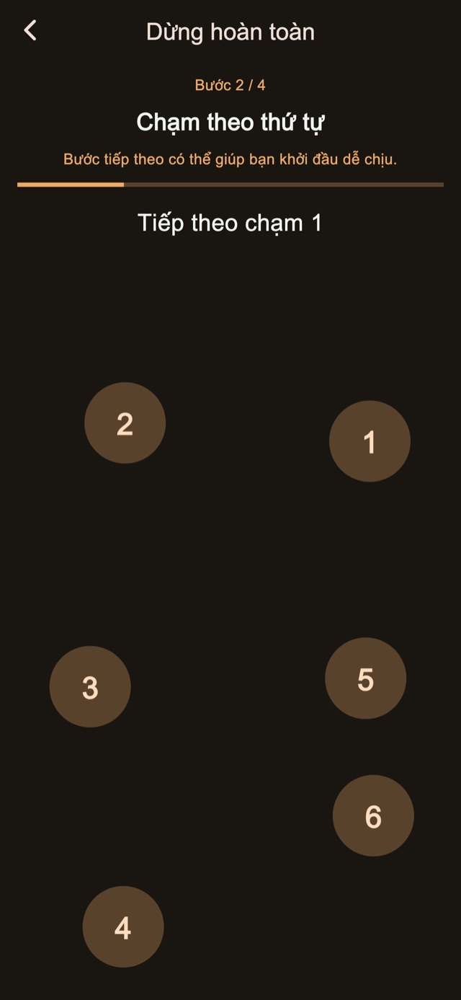
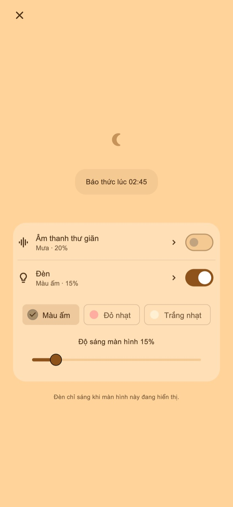

Âm thanh thư giãn
Nghe tiếng mưa, sóng hoặc tiếng ồn trắng. Âm thanh chỉ phát khi bạn bật và nhỏ dần đến khi dừng ở báo thức đầu tiên.
Báo thức rung cho giấc ngủ ngắn và sau khi ru con ngủ
Dành cho người ngủ quên khi chợp mắt hoặc ngủ theo lúc ru con.
01Kiểu rung
Độ dài và nhịp rung thay đổi, tạo cảm giác khác với thông báo hằng ngày. Cảm giác lạ này được thiết kế để giúp bạn chú ý đến báo thức và tỉnh dậy.
Rung ngắn, dài và liên tiếp. Chọn một trong bốn chế độ cơ bản: ngẫu nhiên, kiểu thông báo, chủ yếu dài hoặc chủ yếu ngắn. Độ dài và khoảng nghỉ thay đổi để tạo nhịp khác nhau. Bạn có thể thử trước khi đặt báo thức.
Kiểu rung
02Nhắc nhiều lần
Dừng riêng lần hiện tại để giữ các lần sau, hoặc kết thúc cả loạt để hủy phần còn lại.
Lưu số lần và khoảng cách là tính năng Premium.
Nhắc nhiều lần
Kết thúc khi đã dậy
03Thao tác dừng
Tính toán, chạm số theo thứ tự, nhấn giữ và chạm liên tục là các bước để dừng hoặc báo lại. Các bước tiêu chuẩn được cung cấp sẵn. Chỉnh sửa và kết hợp bước cần Premium.

Màn hình Ban đêm
Điều chỉnh độ sáng và cách hiển thị đồng hồ. Có thể ẩn màn hình sau một lúc không thao tác, rồi chạm để hiện lại giờ và nút điều khiển.
Chọn khoảng thời gian, như 30 phút, hoặc giờ muốn dậy.
Giữ màn hình đêm mở; bật âm thanh hoặc ánh sáng nếu muốn.
Hoàn thành các bước dừng và kết thúc loạt khi đã dậy.
Âm thanh thư giãn và ánh sáng
Khi ngủ ngắn hoặc ru con ngủ, hãy bật từ màn hình đêm nếu cần.
Nghe tiếng mưa, sóng hoặc tiếng ồn trắng. Âm thanh chỉ phát khi bạn bật và nhỏ dần đến khi dừng ở báo thức đầu tiên.
Chọn ánh sáng ấm, đỏ nhạt hoặc trắng dịu rồi chỉnh độ sáng.
Miễn phí các chức năng cơ bản

Miễn phí / Premium
Bốn chế độ rung, dừng và báo lại tiêu chuẩn, màn hình đêm, âm thanh và ánh sáng đều có sẵn. Một số màn hình có quảng cáo.
| Tính năng | Miễn phí | Premium |
|---|---|---|
| Kiểu rung | ✓ | ✓ |
| Nhắc nhiều lần | Cài đặt tiêu chuẩn | Có thể tùy chỉnh |
| Thao tác dừng | Cài đặt tiêu chuẩn | Có thể tùy chỉnh |
| Màn hình Ban đêm / Âm thanh thư giãn / Đèn | ✓ | ✓ |
| Tạo và sửa nhịp rung riêng. | — | ✓ |
| Xóa toàn bộ quảng cáo. | — | ✓ |
Chọn gói tháng hoặc mua một lần. Gói tháng tự động gia hạn; quản lý hoặc hủy trong cài đặt tài khoản cửa hàng. Xem giá và điều kiện trên màn hình mua.
Câu hỏi thường gặp
Để dùng nhịp rung riêng của ứng dụng, hãy giữ màn hình đêm mở sau khi đặt báo thức. Khóa bằng nút sườn hoặc chuyển ứng dụng sẽ để iOS điều khiển rung; nhịp và cường độ đã chọn không được áp dụng. Kiểm tra quyền và cài đặt rung rồi chạy thử trước khi dùng.
Nghe tiếng mưa, sóng hoặc tiếng ồn trắng. Âm thanh chỉ phát khi bạn bật và nhỏ dần đến khi dừng ở báo thức đầu tiên. Chọn ánh sáng ấm, đỏ nhạt hoặc trắng dịu rồi chỉnh độ sáng.
Bốn chế độ rung, dừng và báo lại tiêu chuẩn, màn hình đêm, âm thanh và ánh sáng đều có sẵn. Một số màn hình có quảng cáo. Xóa toàn bộ quảng cáo. Đổi số lần nhắc và khoảng cách. Chỉnh các bước dừng và báo lại. Tạo và sửa nhịp rung riêng. Chọn gói tháng hoặc mua một lần. Gói tháng tự động gia hạn; quản lý hoặc hủy trong cài đặt tài khoản cửa hàng. Xem giá và điều kiện trên màn hình mua.
Tải xuống
Báo thức rung cho giấc ngủ ngắn và sau khi ru con ngủ
Miễn phí các chức năng cơ bản
iPhone: iOS 26.1+ / Android: 8.0+